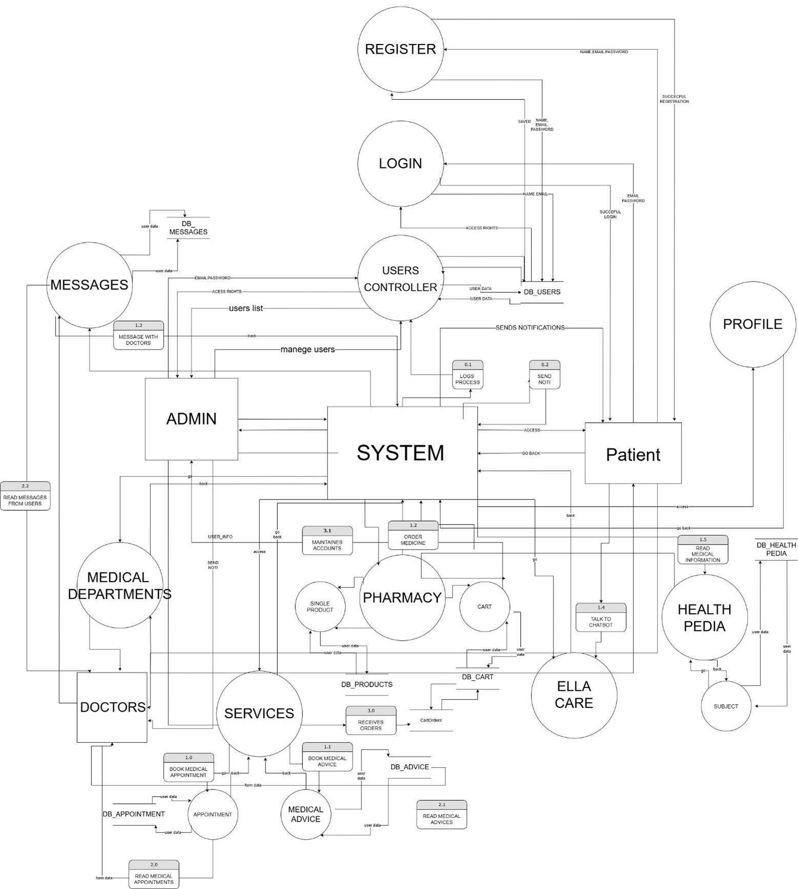

I'm
Adnan Abu Othman
Full Stack Developer
I'm
Full Stack Developer
Motivated and detail-oriented full-stack web developer with strong skills in ASP.NET Core, C#, and modern web technologies. Seeking an opportunity to contribute to real-world projects, expand my expertise in both frontend and backend development, and grow within a collaborative team environment. Passionate about building clean, efficient, and user-centered applications, and eager to apply my academic background, internship experience, and hands-on projects to deliver meaningful solutions
Oct 2021 - Jun 2025
During my 3.5 years of study I gained a solid foundation in both theoretical and practical aspects of IT, including software development, database design, networking, and web technologies. I worked on several projects that improved my problem-solving, teamwork and technical skills.
Doctorak is a modern healthcare platform designed to make medical services more accessible, efficient, and user-friendly for both patients and professionals.
The goal is to bridge the gap between patients and healthcare providers, improve communication, and offer reliable medical services from the comfort of your home.
📅 Book medical appointments easily and securely
💬 Request consultations with licensed doctors
💊 Order medicines directly from a digital pharmacy
📚 Access trusted health articles and advice
🤖 Chat with an AI assistant for quick medical guidance
👨⚕️ Doctors can manage their schedules and consultations
🧑⚕️ Pharmacists can sell and manage medicine orders
🛠️ Admins have full control over user management and system operations

MoneyScope is a personal finance web app built with ASP.NET Core (MVC) and Entity Framework Core. It allows users to register, log in, manage income and expenses, and view transaction history. The project focuses on practicing real-world concepts like authentication, CRUD operations, and clean code architecture
Its primary goal is to help users track, organize, and understand their finances through a clean and intuitive interface
1. User Authentication
2. Transaction Management
3. Categories
4. Transaction History
5. Dashboard & Insights
7. Clean Architecture
8. Security Best Practices
9. Modern UI
Completed an IT internship at Hikma Pharmaceuticals, focusing on infrastructure and data center operations. Gained hands-on experience with servers, cloud systems, and enterprise tools.

A three-month intensive full stack development training program provided by Orange. The training focused on building modern web applications using both frontend and backend technologies. It included hands-on projects, coding exercises, and real-world scenarios. Participants learned how to design user interfaces, develop server-side logic, work with databases, and deploy complete web solutions. The program strengthened problem-solving skills, teamwork, version control, and best practices in web development.